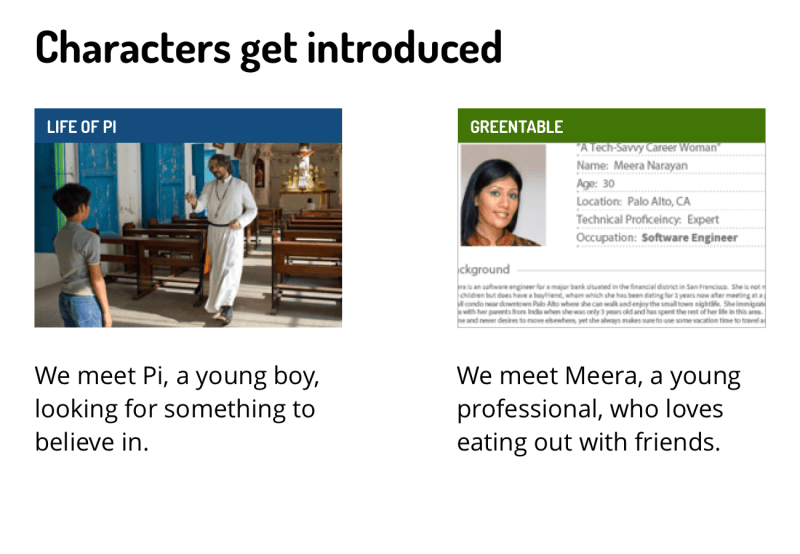
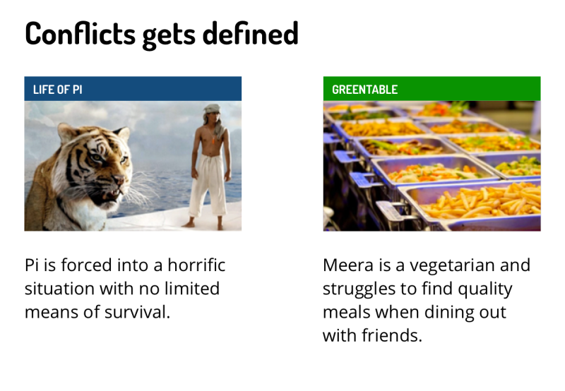
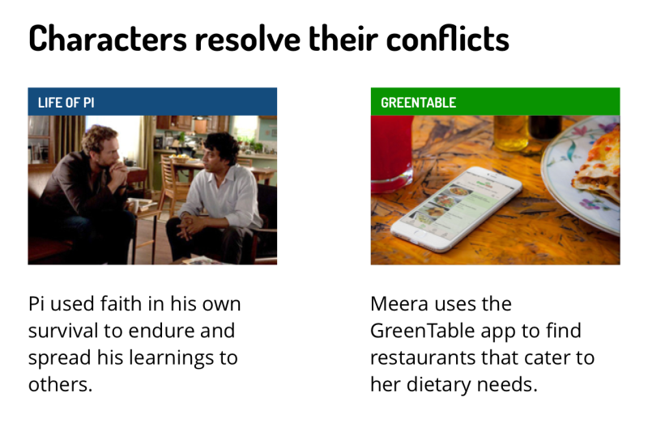

Stories were some of my best friends growing up as I would consume them through books and movies eventually inspiring me to create my own. Over time, this inspiration creeps into my work as a product designer as it is a natural part of me. Currently, I’m working in Silicon Valley where I love to use this inspiration to help me solve problems for enterprise users.
When I was a kid, I wanted to be a movie director or a novelist. I made the transition over to the Internet knowing full well that I can use this medium to be the storyteller of my dreams.
So whats my process of applying this to my current work? This could be done many ways. For example, whenever I start a project, I may try to use the three act structure of movies to assemble a story how I may solve the problem at hand.
Let me show it to you here as I compare how I frame one of my personal projects to the three act structure of one of my favorite recent stories, Life of Pi (excellent in both movie and book formats).



Now for a few stories about work that I have done: